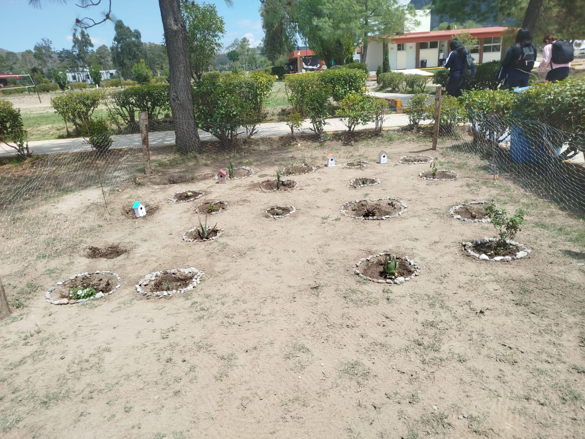
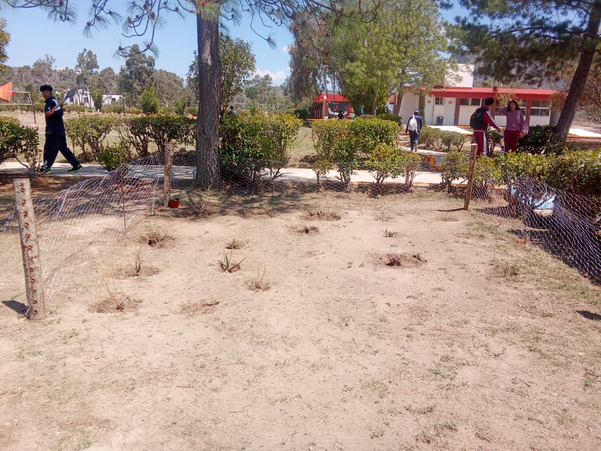
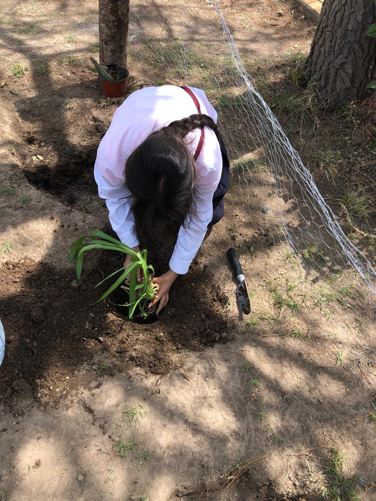
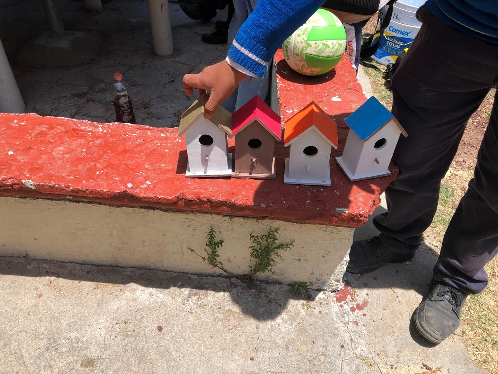
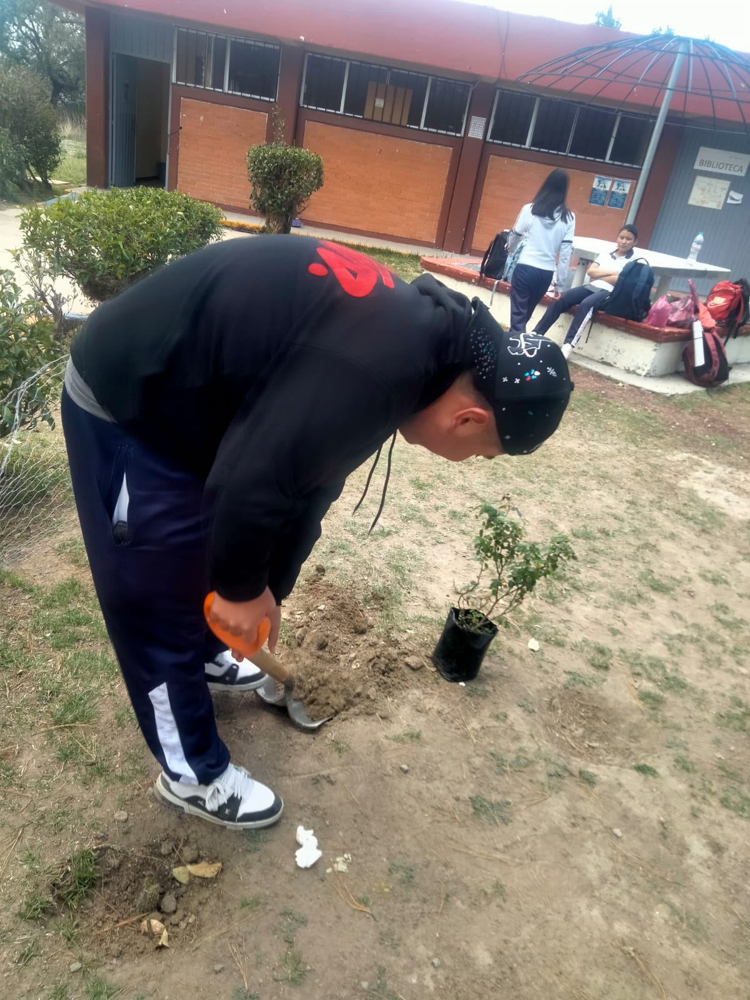
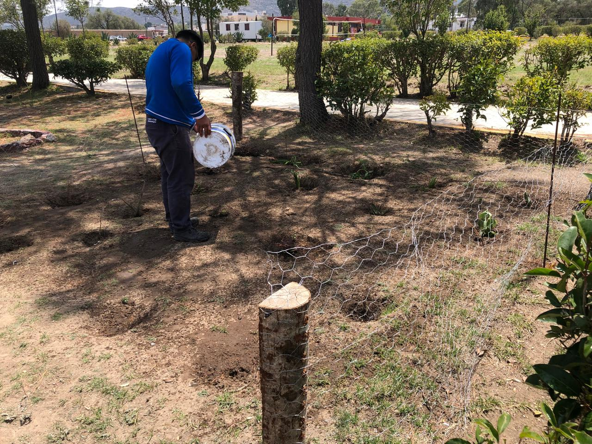
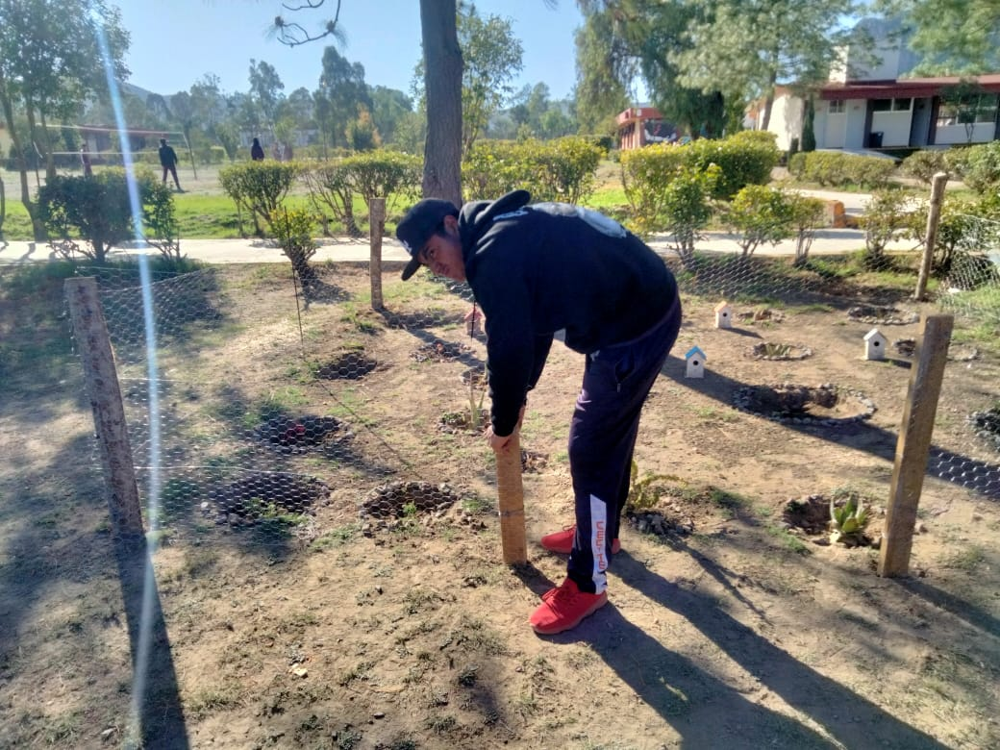
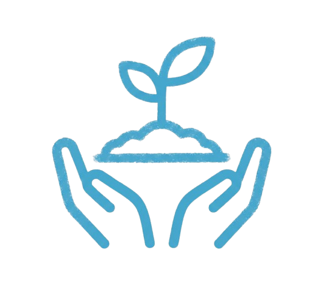

Abejas
Las principales polinizadoras del planeta. Transportan el polen en cestas especiales de sus patas traseras. Una colonia puede polinizar millones de flores al día.
InsectoPolinización Cecyteh · 2026
Un proyecto de Polinización Cecyteh donde la naturaleza florece,
los polinizadores encuentran hogar
y el futuro comienza.
Un jardín polinizador es un espacio diseñado intencionalmente para atraer, alimentar y proteger a los animales que realizan la polinización: abejas, mariposas, colibríes y otros insectos beneficiosos.
A diferencia de un jardín ornamental común, este tipo de jardín selecciona plantas nativas que ofrecen néctar y polen durante todo el año, creando un ecosistema vivo y autosuficiente.
Cada flor, cada hoja y cada rama tiene un propósito: sostener la cadena alimentaria y garantizar la reproducción de las plantas silvestres.

Los grandes héroes del ecosistema
Las principales polinizadoras del planeta. Transportan el polen en cestas especiales de sus patas traseras. Una colonia puede polinizar millones de flores al día.
InsectoPolinizan mientras se alimentan de néctar. Prefieren flores planas y coloridas. Son también bioindicadores de la salud del ecosistema.
InsectoLos únicos pájaros polinizadores en América. Se alimentan de flores tubulares rojas y naranjas, transportando el polen en su pico y plumaje.
AveMás grandes que las abejas y extremadamente eficientes. Utilizan la "polinización sónica" vibrando a una frecuencia que libera el polen de las flores.
InsectoDe la semilla a la flor, paso a paso
Realizamos la limpieza del espacio donde se realizará el jardin polinizador, al igual le volvimos a dar vida a las casas de los pajaritos que se encontraban en el jardin.
Realizamos la Investigación necesaria para poder saber qué plantas son las necesarias para que nuestro jardin polinizador funcione con exito.
Despues de sembrar una variedad de plantas nos aseguramos de mantener un riego constante para asegurar que florezcan las plantas y no se sequen.
Para finalizar terminamos de cercar el jardin, dando como concluido el reacondicionamiento de este jardin que ayudara a polinizar gracias a la variedad de plantas que hemos sembrado.
Haz clic en las imágenes para verlas en detalle






"La tierra no es una herencia de nuestros padres,
sino un préstamo de nuestros hijos."
Entender que somos parte de la naturaleza, no sus dueños. Cada acción humana tiene un impacto en la red de la vida.
Preferir sistemas que se autosustentan y se renuevan, reduciendo la intervención humana y los insumos externos.
La biodiversidad prospera en comunidad. Así también los proyectos humanos: este jardín nació de la colaboración.
Observar antes de actuar. El jardín nos enseñó a mirar con más atención el mundo que nos rodea.
Las plantas nativas tienen raíces profundas que mejoran la infiltración del agua pluvial, reduciendo la escorrentía y recargando los mantos freáticos.
Un jardín de 10 m² puede reducir la temperatura local hasta 3°C mediante la evapotranspiración, combatiendo las islas de calor urbanas.
Las plantas absorben CO₂ y partículas contaminantes, liberando oxígeno puro y creando un microclima más saludable para la comunidad.
Además de polinizadores, el jardín alberga insectos beneficiosos, pequeños reptiles y aves, contribuyendo a la biodiversidad urbana local.
Al apoyar a los polinizadores, protegemos indirectamente el 35% de la producción agrícola mundial que depende de estos organismos.
Los ecosistemas ricos en biodiversidad son más resistentes a los fenómenos climáticos extremos y se recuperan más rápido de perturbaciones.
Las personas detrás del jardín
Developer
En su rol de Developer, fue el encargado de realizar la página web que estás navegando.
Documentación y fotografía
Se encargaron de la Documentación y fotografía. Gracias a su lente, capturaron cada momento del proceso, creando el registro visual completo de nuestro trabajo.

Siembra y cuidado
Conformaron el equipo de Siembra y cuidado. Ellos lideraron las actividades físicas de siembra, el riego constante y el mantenimiento necesario para que el ecosistema se mantenga vivo.
Comunicación y edicion
Trabajaron en la Comunicación y edición. Elaboraron los materiales de difusión y coordinaron toda la presentación del proyecto para compartir nuestro impacto con el mundo.
Este proyecto nos demostró que el acto más pequeño, plantar una semilla, puede desencadenar una cadena de vida que va mucho más allá de lo que podemos imaginar.
Aprendimos que la naturaleza no necesita que la controlemos, sino que la acompañemos. Que cada especie tiene su lugar en el tejido de la vida, y que remover uno de esos hilos tiene consecuencias que se propagan silenciosamente.
El jardín polinizador que construimos no es un fin, sino un principio. Un punto de partida desde el cual seguir observando, aprendiendo y actuando con mayor responsabilidad hacia el planeta que habitamos.
Un jardín, un árbol, una maceta. No importa el tamaño. Lo que importa es el compromiso con la vida.